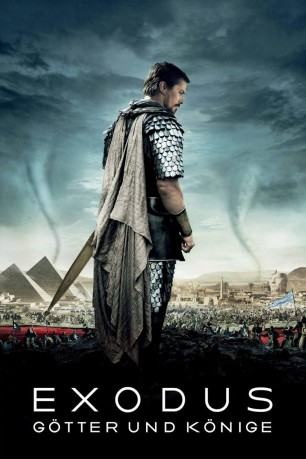

gesehen am 09.05.2017
gesehen am 09.05.2017Alternativ: Exodus: Gods and Kings gesehen am 09.05.2017
 
 IMDB-Wertung: 6.0 / 10
IMDB-Wertung: 6.0 / 10  Metascore:
Metascore: 
Moses und Ramses wachsen zusammen in der ägyptischen Pharaonenfamilie auf. Obwohl sie keine Blutsverwandtschaft verbindet, stehen sie sich doch sehr nahe. Während sie älter werden, nimmt das gegenseitige Verständnis jedoch immer weiter ab. Ramses steigt zum Pharao auf – Moses, der als Kind im Fluss gefunden wurde und aufgrund seiner Herkunft eigentlich gar nicht Ägypter ist, wird zur Stimme der unterdrückten Israeliten, die in Ägypten als Sklaven zum Bau der Pyramiden gezwungen werden. Eines Tages hat Moses eine Vision, in der Gott selbst erscheint und ihm aufträgt, die Israeliten durch die Wüste in das kanaanäische Land zu führen, um sie so von der Unterdrückung zu befreien. Moses wird dem Befehl folgen. Mit insgesamt 600.000 Ex-Sklaven geht er auf eine vierzig Jahre währende Wanderung zum Gelobten Land, dem Willen und den Streitkräften Ramses zum Trotz….
Jahr: 2014
Dauer: 150 Minuten
FSK: 12
Land: England Studio: 20th Century FoxTonspuren: DTS - ,
Untertitel: Deutsch,
Auflösung: 1080p (1920x800) Größe: 7976 MB
Genre: Action, Drama, Abenteuer
Regisseur:  Ridley Scott
Ridley Scott
Drehbuch: Andre Fabrizio
Soundtrack:
Darsteller:
Datei: X:\2014(A-F)\Exodus Götter und Könige (2014, FSK12, 1920x800).mkv seit 09.05.2017
Festplatte: HD 2013(I-Z)-2014(A-Z)
 Es gibt insgesamt 119 Filme in der Gruppe '2014(A-F)'
Es gibt insgesamt 119 Filme in der Gruppe '2014(A-F)'